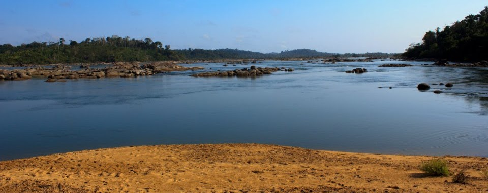
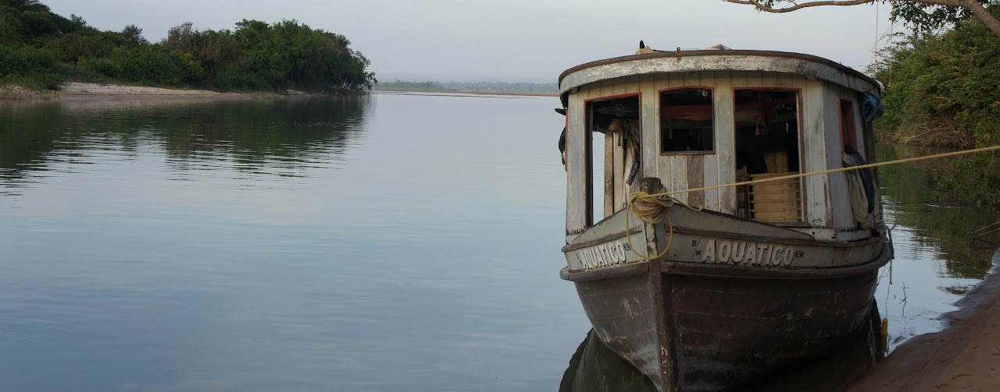
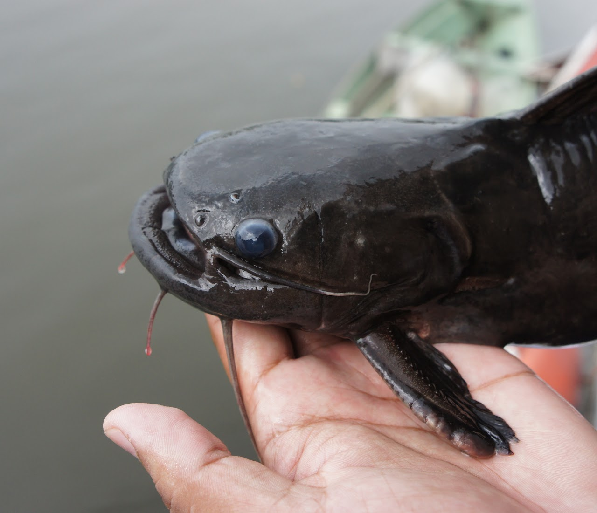
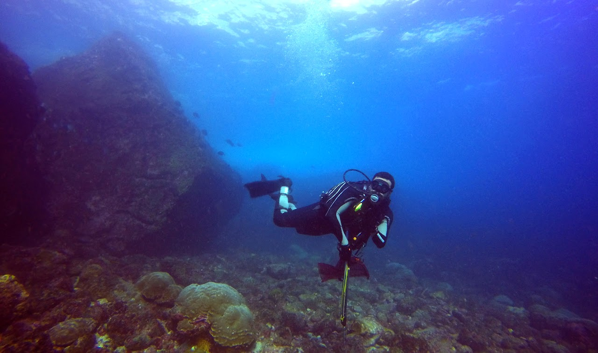

About Me
My interest in the finned creatures can be traced back to my childhood on the Northeast Brazilian coast. At that time, a Jangada fishing boat mooring on the sandy beaches of Tibau would capture my attention for hours. In that desert-like landscape, there was nothing more interesting than a fisherman's basket. Hairtails, tarpons, robalos, lookdowns, and pompanos were among the frequent catches. All this diversity of finned creatures fascinated me and subconsciously drove my professional career.
Soon enough, I saw myself funded by the National Council for Scientific and Technological Development (CNPq) to study marine fishes' chromosomal evolution at the Universidad Federal do Rio Grande do Norte (UFRN). Together with Dr. Wagner Molina, I took my first steps as a young scientist, as Dr. Molina provided me with all the tools I needed to lead my own research project. From early on in my undergraduate studies, I was able to experience all sides of the scientific research process, from data production to communicational aspects. My first scientific paper was an outcome of this experience: a study that reported that remarkable differences in the chromosomal configurations may work as a post-zygotic barrier in two sympatric species of silversides common to the Brazilian coast. Here I was once more, exploring the same sandy beaches I grew up in. Still, this time, as a fledgling scientist asking himself about the processes responsible for the great diversity of fishes that has always fascinated me.
Nevertheless, I couldn't deny the Amazon heritage. My father, an Amazonian native, loved impressing me with stories about how a peacock bass takes care of its brood inside its mouth or how effective rotten eggs are when attempting to hook silver arowanas skimming the water’s surface. I needed to learn more, so I decided to follow my father's footsteps and study the Amazonian fish fauna during my Master's. As part of Dr. Tomas Hrbek's Lab, I had the opportunity to develop a conservation study that adverts to the large number of undescribed species endemic to two major tributaries of the Amazon River in Brazil—the Xingu and Tapajós Rivers—which are under immediate threat from extensive hydroelectric dam development schemes. With Dr. Hrbek, I delved deeper into the concepts of systematics, biogeography, and microevolution, which helped me to continue building up a solid foundation for my evolutionary biology career.
During the period I spent in the Amazon, I was always ready to grab my hammock and fishing gear and join long field expeditions exploring remote rivers and creeks. Observing nature closely provided me with a broader perspective of both the ecological and evolutionary processes responsible for the astonishing diversity found in Neotropical Ostariophysan fishes today. Besides that, this was a prolific period in which I had the opportunity to collaborate with other young scientists on projects that added to the Amazonian fish fauna's knowledge and descriptions. When I joined Dr. Rupert Collins in an expedition to the Nhamundá River—a system never before visited by ichthyologists—we were stunned to find a weird, spiny, and armored catfish of a genus that had never been reported from the Amazon basin before (Pseudolithoxus). We named this new species, Pseudolithoxus kinja, "kinja" translating to "true people" in reverence to how the Waimiri-Atroari indigenous people call themselves. This homage was meant to highlight these brave people who have survived attempted genocide and "civilization" and nowadays thrive in a protected area that extends along the Uatumã River.
Then the ocean called to me once again, and I embraced what I called a "diadromous academic life," which led me to join Dr. Ricardo Betancur's lab for my PhD. Together, we used a macroevolutionary approach to study the recovery of marine diversity after the Cretaceous-Paleogene (K-Pg) mass extinction. We integrated genome-wide molecular data and paleontological information to produce highly-resolved, time-calibrated phylogenetic trees for diverse acanthomorph fish groups. The estimated phylogenies were then used to assess the tempo and mode of evolution throughout the Fish Tree of Life. By combining genomic data with phylogenetic comparative methods, I addressed key uncertainties in fish evolution and explored how evolutionary convergence drives body plan diversity.
After earning my Ph.D., I was awarded an EMBO Postdoctoral Fellowship to work alongside Dr. Walter Salzburger at the University of Basel. Together, we have investigated the molecular mechanisms behind the evolution of the diverse body plans in Lake Tanganyika cichlids, one of the most remarkable examples of adaptive radiation. Our research has highlighted how convergent genetic variation in developmental pathways has driven rapid morphological changes, providing insight into how fish adapt to new environments and niches.
Throughout my career, my fieldwork, and research have deepened my understanding of fish biodiversity, from coastal waters to the Amazon and beyond, revealing the evolutionary processes shaping the incredible diversity of life.